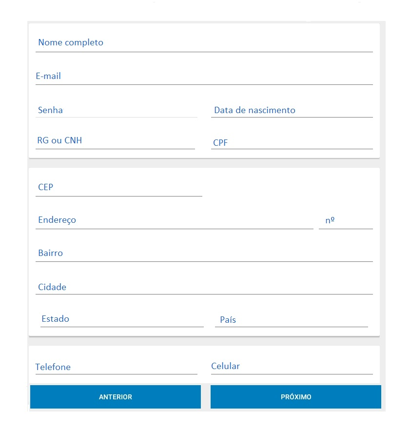
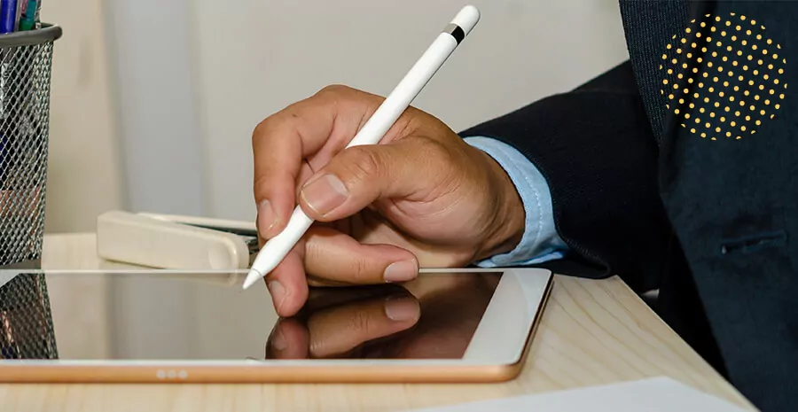

Ao entrar na página da Porto Seguro, o cliente preencherá as informações da bike e suas informações de cadastro: nome completo, e-mail, senha, data de nascimento, RG ou CNH, CPF, endereço e telefone. Esses dados ficam armazenados e são reutilizados posteriormente quando o cliente solicitar o seguro de bikes, sendo neceessário somente a comprovação desses documentos por meio de fotos.
Após escolher seu seguro de bikes de forma virtual, o cliente será direcionado para a página de vistoria onde enviará fotos de seus documentos pessoais e dos documentos da bike. Além disso, também será solicitado para a análise que o cliente envie fotos e vídeos de partes específicas da bike - essas fotos têm que ser tiradas no momento do envio. Todo o processo da análise ocorre em poucos minutos e o cliente é avisado por e-mail o status de sua vistoria.
Caso tenha algo de errado ou tenha faltado algo, o cliente será via e-mail o que aconteceu e quais fotos, vídeos e/ou documentos serão necessários enviar novamente. Mas se estiver tudo certo, ele receberá um e-mail sinalizando que foi aprovado na vistoria de sua bike e quais são os próximo passos. Vale lembrar que todo esse processo acontece em poucos minutos.
Depois de passar no processo da vistoria, o cliente será informado do valor de seu seguro - que depende de n fatores informados pelo cliente - e receberá seu contrato para ser assinado, também de forma virtual, e poderá realizar o pagamento.
Durante todo o processo da aquisição do seguro e do envio das fotos e vídeos da vistoria, o cliente pode entrar em contato com o time de atendimento para retirar suas dúvidas.
Ao fim, é possível deixar um feedback avaliando os serviços, o tempo do processo, os problemas, o atendimento e a resolução de suas dúvidas.